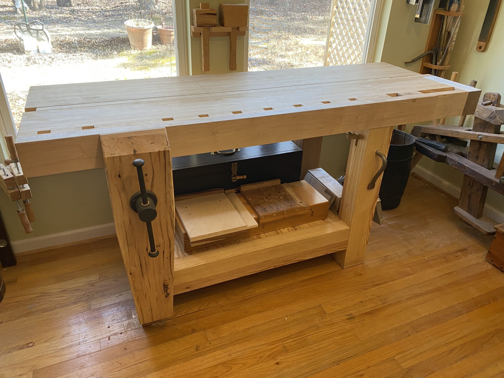
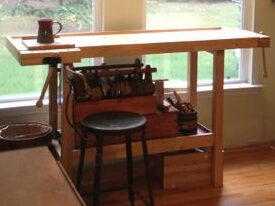

Workbenches
No workshop tool discussion is complete without discussing workbenches and chests and other ways to safely secure and protect your tools. This week we will be focusing on workbenches. Workbenches are, to some, considered workshop furniture. I think this is incorrect; workbenches are a tool, and in my opinion, the most important tool in your shop.
Without a workbench, you cannot properly hold your project pieces to do basic operations. Oh sure, you can put pieces on saw horses and I have, but a nice bench makes a world of difference when it comes to comfort and efficiency. I can say after finishing my bench, all operations have become 100% better than my old bench. It stays put and does not “walk” all around my shop when doing simple planing and it is very stout when chopping mortices and hammering over a leg. Long boards are a breeze. I can work on small pieces and thin pieces too.
Disclaimer: I will be referencing Chris Schwarz of Lost Art Press and Roy underhill of “The Woodwright’s Shop” a lot in this and the upcoming blogs. Chris and Roy have heavily influenced me and countless others during this renaissance of hand-tool wood working. Chris and his team at LAP have propelled this craft to levels not seen since at least the early 20th Century. Roy with his three decades of woodworking shown on PBS’ “The Woodwright’s Shop” had a very early influence on me personally. I also want to thank the many YouTube content creators (links below) who have also given new life into the craft.
I started my seriously fun woodworking adventure late in life (I’ve been dabbling all my life, but really went all-in around age 50) and with very little knowledge of the craft (more on my lack of knowledge later). I mainly knew about power tools and didn’t fully digest Roy’s show content until I actually took a class at his Woodwright’s School.
Published in 2011, LAP’s “The Anarchist’s Tool Chest” was truly a turning point in my understanding of the craft and reinforced my ideals about hand-tool woodworking, self-reliance and the state of todays furniture industry (it sucks by the way). I just finished re-reading “The Anarchist’s Tool Chest” and it is just as fresh and relevant today, 10 as it was ten years ago when it was published. The good news is the state of hand-tool working today is much more widely accepted than a decade ago. There are also more tool makers today that recognize that woodworkers demand quality products and are actually making them.

My first workbench was purchased with an abundance of enthusiasm and ignorance. Those are a bad combination because the ignorance can lead you to a purchase an item that can kill your enthusiasm. Fortunately, this did not happen in my case. I just realized I just spent too much money (money that could be spent on materials for a real workbench) on a crappy and poorly designed workbench-shaped object. Okay, so now you know, so please don’t make the same mistake I did. Curb your enthusiasm a bit, and do your research before laying out big bucks for anything. Flashy ads and marketing hype are designed to tap into our lizard brains and trick us into wasting our hard-earned cash. Lesson learned; now let’s talk about real workbenches.

The Great Roubo
I have detailed my Split-Top Roubo Workbench journey on several earlier posts, just click on the Workbench tag under Categories on the right to read more on those.
The Roubo Workbench above is from A-J Roubo’s – L’Art du Menuisier – Planche 011 published in 1769. This is what a workbench should look like. Heavy, really heavy, stout legs, and rock-solid joinery.
I chose the Split-Top design to make the bench easier to move. It can be broken down into 6 major pieces and easily transported. You do sacrifice some joint rigidity using breakdown barrel nuts and bolts in the legs and securing the top to the base, but so far I have not had an issue with rigidity and fasteners coming loose.
There are many different workbench designs out there, but I found the Split-Top Roubo design perfect for my needs. I choose the BenchCrafted vises as they are the best metal vises made today. They’re not cheap, but they’re very nice and I love using them. They have smooth action and work with little effort. Do not cheap out on bench hardware, you will regret it if you do.

Peter Ross Planing Stop 
Peter Ross Planing Stop (not installed)
Here is a picture of my new bench stop made by Master Blacksmith, Peter Ross. This has yet to be installed on the bench but it’s a beautifully crafted piece and I look forward to installing it (soon) and using it.
Links
Books and Supplies
o Andre Roubo’s – With All the Precision Possible: Roubo on Furniture – Translation published by Lost Art Press)
o Roy Underhill – The Woodwright’s Shop – Publications
o Lost Art Press – The Anarchist’s Workbench – Chris Schwarz 2020
o Lost Art Press – The Workbench Book – Scott Landis 1987
o BenchCrafted – Vises and Hardware
o Peter Ross – Master Blacksmith
Video and Blogs
o Roy Underhill – Woodwright’s Shop – PBS
o Chris Schwarz – Blog Search “Workbench”
o Paul Sellers – Paul Sellers Woodwork
o James Wright – Wood by Wright
o Matt Estlea – Matt Estlea
o Joshua Farnsworth – Wood and Shop
o Rex Krueger – Rex Krueger
Please subscribe (on right hand side on computer and very bottom on phone) to the mailing list to get future blog updates.
Until next time, keep making shavings and sawdust.
Peace,
Aaron
Copyright 2021 © W. A. Henderson

{kind=link}
{kind=link}
{kind=link}
{kind=link}
{kind=link}
{kind=link}
{kind=link}
{kind=link}